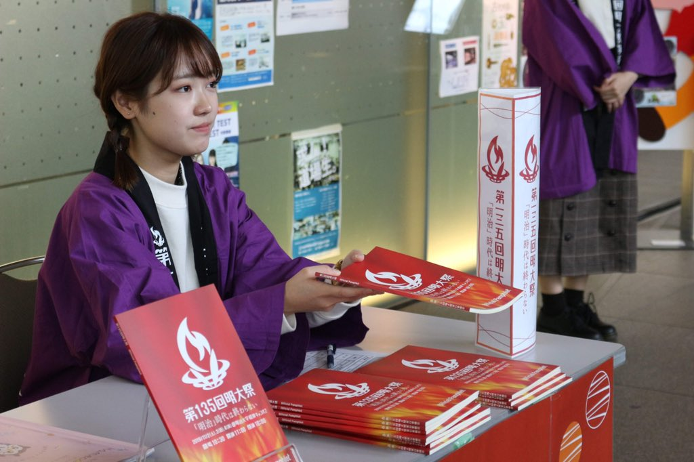
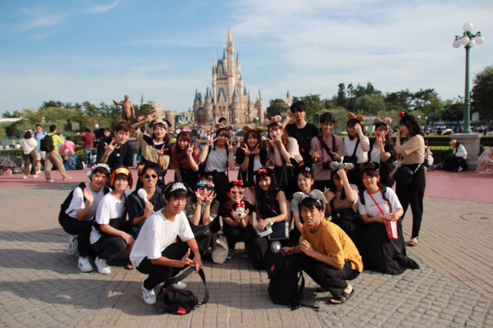

広報局紹介

広報局の役割
私たち広報局は明大祭に関する広報を行う局です！明大祭への周知を高めるために様々な方法で広報活動を行っています。例えば、Twitter、Instagram などのSNSや、ビラやキャンパス内のポスター、三角POPなどを使用しています。また、活動の自由度が高いため、自分で考案した新しい広報にどんどん挑戦できます！
広報局の活動内容
広報局では少人数に分かれて主にグループワークを行っています。ここでは、広報対象を選定し、どのような広報手段で情報発信するかを考えます。その他にも広報活動の反省や明大祭当日に向けてのシミュレーションを行います。局だけでなく部門やチームでの活動もあり、各チームで詳細を決定していきます。会議を通して様々な人と関わる機会があり、たくさんの意見を吸収できるので、よりよい広報活動に繋げていくことができます。
広報局の会議日
局会議：毎週火曜日19:00～
局会議に加えて週1回部門会議を行います。曜日は未定です。
レクの様子
※2019年度のレクの様子です。 広報局は、個性豊かな人が多く在籍しており、笑いの絶えない局です！夏祭りや花火大会など季節に応じたレクだけでなく、テーマパークなどのレクも行っています。現在は対面でのレクは自粛しておりますが、オンライン上で定期的にテーマトークや実物しりとりなどのレクを行っています。どんな人でも大歓迎です！一緒に有意義な明実ライフを楽しみましょう！